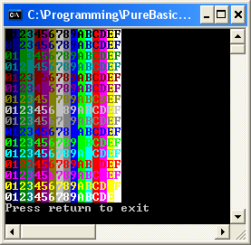

ConsoleColor()
Syntax
ConsoleColor(CharacterColor, BackgroundColor)Description
Change the colors used by the text display. Any characters printed after calling this function will use the new colors.
Parameters
CharacterColor The color to be used for the characters. The color values range from 0 to 15, which are the 16 colors available in console mode: 0 - Black (default background) 1 - Blue 2 - Green 3 - Cyan 4 - Red 5 - Magenta 6 - Brown 7 - Light grey (default foreground) 8 - Dark grey 9 - Bright blue 10 - Bright green 11 - Bright cyan 12 - Bright red 13 - Bright magenta 14 - Yellow 15 - WhiteBackgroundColor The color for the character background. The values are the same as for the CharacterColor.
Return value
None.
Example
If OpenConsole() For Foreground = 0 To 15 For Background = 0 To 15 ConsoleColor(Foreground, Background) Print(Right(Hex(Background), 1)) Next PrintN("") Next ConsoleColor(7, 0) PrintN("Press return to exit") Input() EndIf
See Also
EnableGraphicalConsole()
Supported OS
Windows